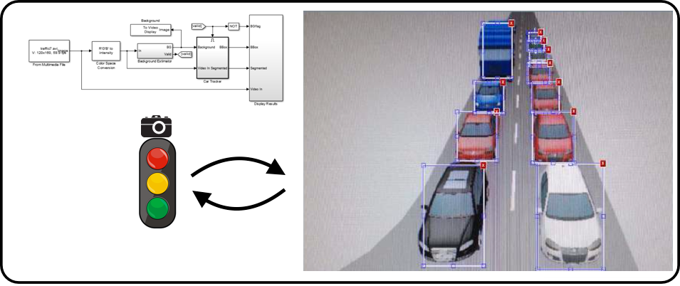

|
Ethan Caballero
I was a researcher/developer at Talla working on building intelligent assistants for knowledge workers. Previously, I spent some time at
Loop AI Labs working on methods for learning semantics and at The Hive helping startups build machine learning systems. I finished my bachelors in electrical & computer engineering at University of New Orleans.
email /
cv /
linkedin /
twitter /
google_scholar /
github
|

|
|
My past focus was on tasks that involve multimodal learning, unsupervised learning, and/or integrating learning with reasoning. Here's a link to my old Research Statement if you want more details.
More recently, I've started working on models that can learn STEM.
|
|

|
Learning Optimal Traffic Controller Behavior from Pixel Input Data
K. Azzam, E. Caballero, J. Hardges, E. Hernandez, K. Tran (2014)
[Project Report]
|
|